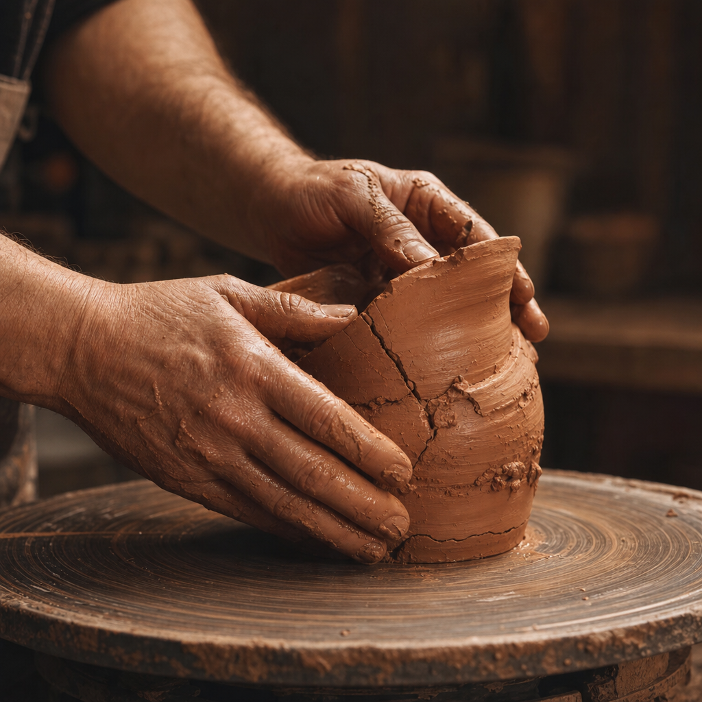

가장 소중한 사람과의 약속을, 정작 중요한 순간에 스스로 저버린 적이 있으신가요? "무슨 일이 있어도 네 편에 서겠다"고 다짐해 놓고, 두려움 앞에서 순식간에 등을 돌린 경험 말입니다. 그런 순간이 지나가면 우리를 괴롭히는 건 실수 자체가 아니라 그다음에 이어지는 질문입니다. "이걸로 정말 끝난 걸까. 이제는 예전으로 돌아갈 수 없는 걸까."
신뢰가 깨진 자리, 우리는 보통 어떻게 하는가
현실에서 이런 이야기는 대개 깔끔하게 끝나지 않습니다. 신뢰가 한 번 깨지면 아예 관계 자체를 정리해 버리는 경우가 많습니다. 이른바 '손절'입니다. 어느 정도는 합리적인 자기 보호이기도 합니다. 한 번 신뢰를 저버린 사람이 다시 그러지 않으리라는 보장이 없으니까요. 그런데 반대로 내가 그 신뢰를 저버린 쪽이었다면 어떨까요. 상대가 나를 손절하기 전에, 스스로를 먼저 손절해 버리지는 않으셨나요.
가장 자신 있었던 사람의 가장 큰 실패
그런데 이천 년 전, 이 흐름을 완전히 뒤집은 이야기가 성경에 나옵니다. 베드로입니다. 그는 예수님의 제자들 중에서도 가장 앞장서서 말하고 행동하던 사람이었습니다. 예수님이 잡혀가시기 전날 밤, 다른 제자들이 흩어질 거라는 말에 베드로는 이렇게 장담합니다. "다른 사람은 다 주를 버릴지라도 저는 절대 그러지 않겠습니다." 자신만만한, 진심 어린 다짐이었습니다.
실패하기도 전에 이미 시작된 기도
그런데 흥미로운 건, 예수님이 이 장담에 대해 먼저 하신 말씀입니다. 예수님은 베드로를 나무라거나 경고하는 대신, 이렇게 말씀하셨습니다.
"시몬아, 시몬아, 보라 사탄이 너희를 밀 까부르듯 하려고 요구하였으나 내가 너를 위하여 네 믿음이 떨어지지 않기를 기도하였노니 너는 돌이킨 후에 네 형제를 굳게 하라." (누가복음 22장 31~32절)
이 말씀에서 눈여겨볼 부분은 시제입니다. 예수님은 베드로가 넘어질 것을 예상하시면서도, "넘어지지 않게 해 주겠다"고 하지 않으셨습니다. 대신 "네가 돌이킨 후에"라고, 회복까지를 이미 전제로 말씀하셨습니다. 그리고 그 실패보다 먼저, 이미 기도하고 계셨습니다. 베드로가 자신을 부인하기도 전에, 그의 회복은 이미 시작되어 있었던 셈입니다.
그리고, 정말로 세 번 부인하다
그날 밤 예수님이 붙잡히시자, 베드로는 멀찍이서 그 뒤를 따라갔습니다. 그런데 사람들이 그에게 "너도 저 사람의 제자가 아니냐"고 물을 때마다, 베드로는 두려움에 "나는 그 사람을 모른다"고 대답했습니다. 그것도 한 번이 아니라 세 번이었습니다. 세 번째 부인이 끝나자마자 닭이 울었고, 베드로는 예수님이 미리 하셨던 말씀이 떠올라 밖으로 나가 심하게 울었습니다. 자신이 그토록 자신 있게 장담했던 그 말을, 몇 시간 만에 정확히 세 번 어긴 것입니다.

세 번 부인한 자리에, 세 번 다시 찾아오다
예수님은 십자가에서 돌아가셨다가 사흘 만에 다시 살아나셨습니다. 그런데 베드로는 이 놀라운 소식 앞에서도 마냥 기뻐할 수 없었을 것입니다. 자신이 세 번이나 모른다고 했던 그 일이 여전히 마음에 남아 있었을 테니까요. 그러던 어느 날 아침, 부활하신 예수님이 갈릴리 호숫가에서 제자들과 아침을 함께하신 뒤, 베드로에게 다가와 물으십니다.
"네가 나를 사랑하느냐?" ··· 세 번째 이르시되 "요한의 아들 시몬아 네가 나를 사랑하느냐" 하시니 베드로가 근심하여 이르되 "주님 모든 것을 아시오매 내가 주님을 사랑하는 줄을 주님께서 아시나이다" 예수께서 이르시되 "내 양을 먹이라." (요한복음 21장 15~17절)
예수님은 이 질문을 정확히 세 번 반복하셨습니다. 베드로가 세 번 부인했던 것과 같은 횟수입니다. 우연이라 보기 어렵습니다. 예수님은 그 실패의 숫자를 지우신 것이 아니라, 그 숫자만큼 정확히 다시 찾아와 되물으신 것입니다. 그리고 그때마다 "내 양을 먹이라"는, 이전과 똑같이 중요한 사명을 다시 맡기셨습니다.
먼저 달려온 아버지의 모습과 겹쳐지는 장면
이 회복의 장면은 성경의 또 다른 유명한 이야기 하나를 떠올리게 합니다. 아버지의 재산을 미리 받아 탕진하고 돌아온 둘째 아들의 이야기입니다. 그 아들이 아직 마을에 다다르기도 전, 아버지는 이렇게 반응합니다.
"아직도 거리가 먼데 아버지가 그를 보고 측은히 여겨 달려가 목을 안고 입을 맞추니." (누가복음 15장 20절)
아들이 준비해 온 사과의 말을 다 마치기도 전에, 아버지는 이미 달려가고 있었습니다. 베드로를 찾아와 세 번 물으신 예수님의 모습과, 아들을 향해 먼저 달려간 아버지의 모습은 결국 같은 그림입니다. 회복은 우리가 완벽하게 준비된 다음에 시작되는 것이 아니라, 저편에서 먼저 다가오는 발걸음으로 시작된다는 것입니다.
우리에게 남는 것
우리는 흔히 신뢰란 한 번 깨지면, 스스로 그만큼의 대가를 치러야만 겨우 되돌릴 수 있는 것이라 생각합니다. 실제로 현실의 관계 대부분은 그렇게 흘러갑니다. 그런데 베드로의 회복은 그가 자신을 벌하거나 증명해서 얻어낸 것이 아니었습니다. 그가 넘어지기 전부터 그를 위해 기도하고, 넘어진 후에는 정확히 그 숫자만큼 다시 찾아오는 쪽에서 회복이 시작되었습니다.
지금 자신을 먼저 손절하고 계신다면
혹시 지금, 누군가에게 실망을 안겨 준 자신을 스스로 정리하고 계신가요. 아니면 이미 지나간 한 번의 실수를 붙잡고, "나는 이제 그 관계에서, 그 자리에서 자격이 없다"고 판단해 버리셨나요. 베드로도 아마 그렇게 생각했을 것입니다. 그런데 그 판단이 내려지기도 전에, 이미 그를 위한 기도와 그를 향한 발걸음이 먼저 있었습니다. 지금 당신을 향해서도, 어쩌면 같은 기도와 같은 발걸음이 먼저 시작되어 있을지 모릅니다. 당신이라면, 그 부름에 무엇이라고 답하시겠습니까.
"우리는 미쁨이 없을지라도 주는 항상 미쁘시니 자기를 부인하실 수 없으시리라." (디모데후서 2장 13절)